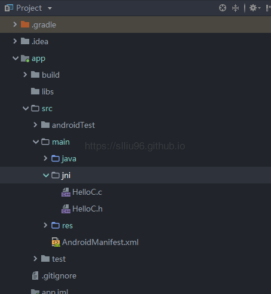
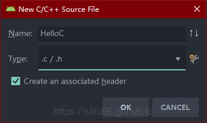
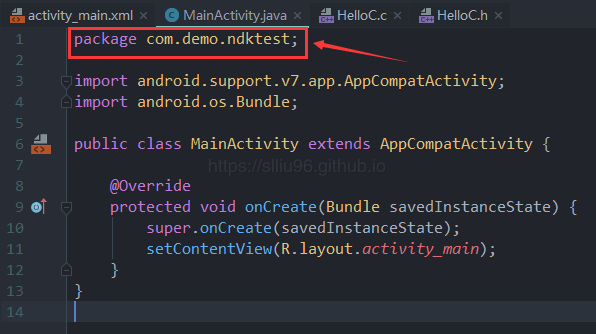
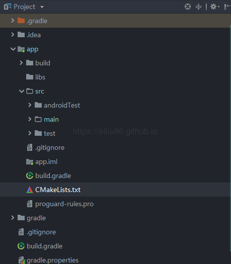
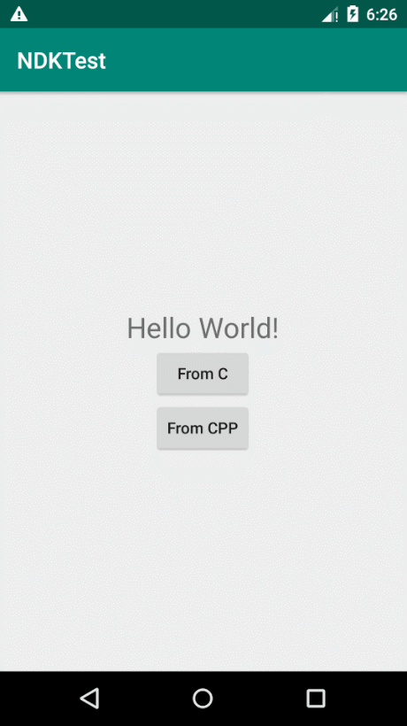

AndroidStudio基于CMake的NDK开发
AndroidStudio基于CMake的NDK开发
前言：目前着手的一个项目需要使用JNI方法从USB读取数据，项目在建立之初并没有考虑添加原生的NDK支持，最初想用比较简便原始的方式：NDK-Build来完成，但Android Studio在3.2版本之后弃用了NDK-Build方式（其实还可以用，但是谷歌官方不推荐），因此改用 CMake 建立并记录于本文。
1. 官方Demo
先解释一下 什么是NDK 以及 什么是JNI 。
两者结合起来，用最粗略的话来讲，就是：在 Android 开发中调用 C/C++ 代码。早期 Android 版本通常使用 NDK-Build 方式构建，但由于不便于管理等原因在新版中被弃用。
对JNI的详细介绍和进阶知识可以参考官方文档或附录
先新建一个原生支持NDK的Android项目，即在新建项目的时候勾选 Include C++ support ，观察一下谷歌建议我们使用的CMake方式的样子。在官方的Demo中，调用和以前的方式并无区别：
1 | public class MainActivity extends AppCompatActivity { |
都是先用静态代码块 static{} 加载JNI模块，然后声明一个native方法并调用。当然，JNI方法的加载和调用不推荐在Activity中实现，应该放在数据处理类或工具类中按需调用，这里涉及到一些性能和安全性的问题，暂时不做多的展开。具体的JNI方法也很简单，只是返回了一个String字符串。重要的是Gradle和CMakeLists.txt文件里的代码，尤其是官方注释，需要注意的地方分别是：①C/C++文件的JNI方法；②项目Gradle；③CMakeLists.txt里的内容。先不急着对官方Demo解释，为了实现手动增加NDK支持，再创建一个不支持原生NDK的空项目，一边改一边对各个模块解释说明。
在C++文件的函数头中，有这么一句：
1 | extern "C" JNIEXPORT jstring JNICALL |
这一行代码其实可以分成两个部分：
1 | // 第一部分 |
第一部分 extern "C"表示对编译C的支持，第二部分 JNIEXPORT jstring JNICALL 可以看成定义了函数的返回值， jstring 可以理解为Java中的String。如果在JNI文件中有多个函数，可以用一个大的 extern "C" 将多个函数一次性括起来，但是C函数和C++函数不能混用，还是要分两个文件（好像是废话= =）：
1 |
|
2. 为已有项目增加NDK支持
既然是要给已有项目增加NDK支持，那就首先创建一个新的空项目模拟一个已存在的项目，然后再通过手动配置添加NDK。
切换到 Project 视图，并在如下图所示的目录层级下创建一个文件夹用来存放C/C++代码：

2.1 创建JNI文件
接着在这个 JNI 文件夹里新建 C/C++ Source File ，先创建一个C文件，假设起名为 HelloC ，在下方的 Type: 下拉框中选择 .c ，同时勾选 Create an associated header 自动创建对应的头文件。

点击OK，就会创建 HelloC.c 和 HelloC.h 并自动将头文件导入到C文件中。函数很简单，直接返回一个String： "Hello from C"
1 | #include "HelloC.h" |
这里要说明一点，代码中 Java_com_demo_ndktest_MainActivity_helloFromC 可以看成是一个方法名，但是这个方法名有严格的命名限制，先进行分解：首先命名必须以 Java_ 开头，后面紧跟着的 com_demo 是项目的包名， ndktest 是项目名， MainActivity 是调用这个JNI方法的类名，最后 helloFromC 才是这个JNI方法的方法名。如果把 com_demo_ndktest_MainActivity 连在一起看，其实就是调用这个JNI方法的类的绝对路径，在本例中也即 MainActivity 的绝对路径，只不过把包的层级表示从点 . 换成了下划线 _。
另外， extern "C" 关键字通常在C/C++混合编程中用于 指定使用C编译方式编译的代码块 ，但是这里本来就是在C文件中写C语言代码，所以没有必要也不允许使用这个关键字了。
如果怕出错，可以在我们想要调用这个JNI方法的类的最上方找到绝对路径，再把点都替换成下划线即可：

2.2 创建CMakeLists.txt
确定好JNI文件后，开始写 CMakeLists.txt ！在创建CMake文件时，理论上可以在任意位置创建，但是一方面为了便于项目管理，另一方面为了防止混淆，还是创建在当前Module根目录下比较好，对于只有一个Module的项目，也就是创建在 app 的根目录下。右键 app 目录，选择 New File ，输入文件名 CMakeLists.txt 。
对于这个文件，文件名必须是“CMakeLists.txt”而不能自定义。

创建完成后向里面写构件库的内容。
（1）指定CMake的最低版本 。这是第一条也是必要的一条：
1 | cmake_minimum_required(VERSION 3.4.1) |
（2）为项目增加一个lib库 。也就是指定刚才写的 HelloC.c 文件，这里我们要指定出C文件的绝对路径： src/main/jni/HelloC.c
1 | add_library( # Sets the name of the library. |
其中
HelloC是创建这个库的命名，可以任意指定，这个名称将在Java中 加载JNI 时用到。SHARED代表这是个动态库，除了这个选项外还有STATIC可选
（3）使用原生log模块 。因为要给项目添加NDK支持，所以需要用到NDK库，采用 find_library 使用原生的库和API：
1 | find_library( # Sets the name of the path variable. |
其中
log-lib是给要使用的NDK库命名，可以自定义，在 CMake关联指定库 时会用到log是我们要使用的库： log模块
（4）CMake关联指定库 。这一步将第（2）步中添加的库关联给CMake：
1 | target_link_libraries( # Specifies the target library. |
其中
HelloC就是第（2）步新增库时给库的命名${log-lib})是引用第（3）步中定义的log模块
完成之后整体的代码（从注释也基本可以看出每一行的用途）：
1 | cmake_minimum_required(VERSION 3.4.1) |
此时CMakeLists.txt部分就已经完成！
2.3 多JNI方法支持
对于大部分时候，JNI和CMakeLIsts的配置就大概如此了，但是有时候可能会遇到需要多个JNI接口的时候，此时就需要在CMakeLists中添加多个库了。在本例中，再新增一个C++的JNI方法，并通过CMake增加到库中。
2.3.1 创建第二个JNI方法（C++）
同样在 jni 目录下新建一个C++文件 HelloCPP.cpp ，与之前创建 HelloC.c 时一样，勾选自动关联头文件，代码和官方Demo如出一辙，只不过把函数名改为 helloFromCPP ：
1 |
|
同样，既然要让这个JNI方法被编译，就需要在CMakeLists中进行添加和关联。
2.3.2在CMake中添加和关联两个JNI接口
步骤与C文件的步骤一模一样，只需要注意库命名和绝对路径正确即可，直接贴代码：
1 | cmake_minimum_required(VERSION 3.4.1) |
这样就把两个JNI方法都连接到CMake了，接下来就是Gradle的配置，使得系统可以调用JNI方法。
2.4 修改Gradle配置
修改模块的Gradle： build.gradle (Module: app) 。先在 defaultConfig 内部增加CMake的一些参数：预处理选项 cppFlags 和架构选择 abiFilters，对于默认情况， cppFlags 为空即可， abiFilters 可以控制生成指定的abi，例如：
1 | externalNativeBuild { |
或者删除 abiFilters 语句表示生成支持所有架构的so库。
接着在与 buildTypes 同级的地方增加一个CMakeLists文件的连接：
1 | externalNativeBuild { |
完成后整个Gradle的配置大致如下（省略非必要部分的内容，但保留了层级关系便于比对）：
1 | apply plugin: 'com.android.application' |
Sync同步一下，再Rebuild一下项目确保没有问题后，就可以运行测试啦！
3. 完成效果
布局很简单就不放代码了，一个 TextView 用来显示String返回值，和两个 Button 分别用来获取C和C++文件JNI方法的字符串并设置到TextView上。代码调用和JNI加载伪代码如下（省略点击监听和控件初始化等）：
1 | package priv.luis.demo.ndktest; |
运行，分别点击两个按钮，可以看到确实成功运行了两个JNI方法并获取到了字符串返回值：

4. 总结备注
对于Android项目的NDK支持基本上就是如此了，不难，但是容易出错，复杂的点通常在具体的函数实现上。最后再总结和强调一些注意事项。
- 尽量不要在Activity中执行JNI的静态加载和调用
- CMakeLists.txt文件中
add_library设置的名称与下方target_link_libraries以及静态加载JNI的地方static{System.loadLibrary("LibraryName")}中的"LibraryName"三者名称要一致 - C/C++函数的函数名与声明该JNI方法处的方法名要一致
- 具体的C/C++函数定义的名称前面的包名和调用函数的类名必须与实际包名和类名一致，并且用下划线 “_” 代替点 “.” 表示层级关系
以上。
5. 附录[参考指导]
- 【1】Android Studio 2.3使用CMake方式NDK入门（作者：狮村小孩）
- 【2】小白初用Android studio的cMake编译生成.so库并调用（作者：lei_notes）
- 【3】NDK开发笔记—CMake构建JNI（作者：xufei5789651）
- 【4】AndroidStudio2.3 NDk Cmake配置（作者：Android小屋）
- 【5】AS2.2使用CMake方式进行JNI/NDK开发（作者：于连林520wcf）
- 【6】android ndk 调用C/C++函数（作者：至信）
- 【7】makefile中的CPPFLAGS LDFLAGS CFLAGS选项详解（作者：shenhuxi_yu）